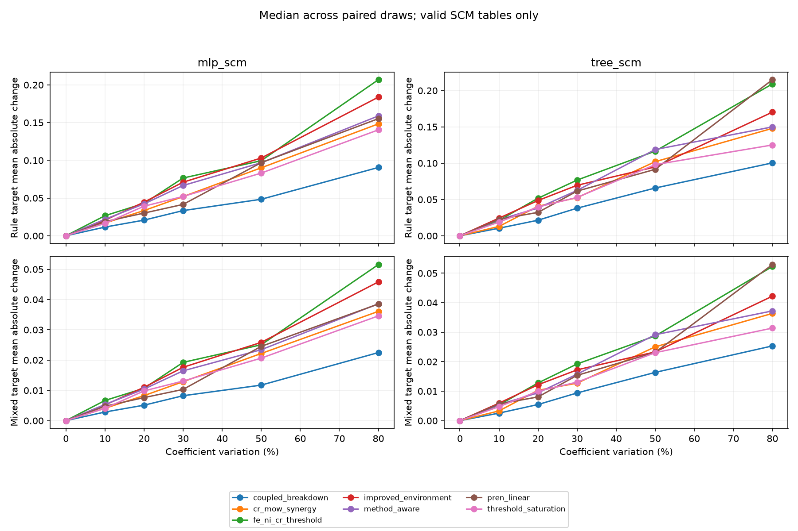

112 base tables; 1 flagged SCM outputs. No model training or real-label evaluation.
Balanced coverage of seven formula families and two SCM types, not the production family frequencies. Each comparison holds features, SCM, method offsets, and lambda fixed. Changes are measured after standardization. Draws sharing a table are not independent evidence. Undefined correlations are not replaced with zero. Flagged SCM cases are retained separately, not repaired.

| family | scm_type | scm_status | variation | tables | rule_spearman_median | rule_mae_median | mixed_spearman_median | mixed_mae_median | rejection_rate | fallback_rate |
|---|---|---|---|---|---|---|---|---|---|---|
| coupled_breakdown | mlp_scm | ok | 0 | 8 | 1 | 0 | 1 | 0 | 0 | 0 |
| coupled_breakdown | mlp_scm | ok | 0.1 | 8 | 0.999861 | 0.0115394 | 0.999982 | 0.00284968 | 0 | 0 |
| coupled_breakdown | mlp_scm | ok | 0.2 | 8 | 0.999589 | 0.0207518 | 0.99996 | 0.00510347 | 0 | 0 |
| coupled_breakdown | mlp_scm | ok | 0.3 | 8 | 0.998925 | 0.0333883 | 0.999895 | 0.00822844 | 0 | 0 |
| coupled_breakdown | mlp_scm | ok | 0.5 | 8 | 0.997868 | 0.0484 | 0.999766 | 0.0117367 | 0 | 0 |
| coupled_breakdown | mlp_scm | ok | 0.8 | 8 | 0.992951 | 0.0905598 | 0.999392 | 0.0224875 | 0.0909091 | 0 |
| coupled_breakdown | tree_scm | ok | 0 | 8 | 1 | 0 | 1 | 0 | 0 | 0 |
| coupled_breakdown | tree_scm | ok | 0.1 | 8 | 0.999872 | 0.010414 | 0.999977 | 0.00255381 | 0 | 0 |
| coupled_breakdown | tree_scm | ok | 0.2 | 8 | 0.999529 | 0.0214432 | 0.999919 | 0.0054657 | 0 | 0 |
| coupled_breakdown | tree_scm | ok | 0.3 | 8 | 0.998623 | 0.0380029 | 0.999793 | 0.00939485 | 0 | 0 |
| coupled_breakdown | tree_scm | ok | 0.5 | 8 | 0.995977 | 0.0657761 | 0.999479 | 0.016368 | 0 | 0 |
| coupled_breakdown | tree_scm | ok | 0.8 | 8 | 0.991649 | 0.100387 | 0.998608 | 0.0253462 | 0.0588235 | 0 |
| cr_mow_synergy | mlp_scm | failure_sentinel | 0 | 1 | 1 | 0 | 1 | 0 | 0 | 0 |
| cr_mow_synergy | mlp_scm | failure_sentinel | 0.1 | 1 | 0.99957 | 0.0218957 | 0.99957 | 0.0218957 | 0 | 0 |
| cr_mow_synergy | mlp_scm | failure_sentinel | 0.2 | 1 | 0.998162 | 0.047556 | 0.998162 | 0.047556 | 0 | 0 |
| cr_mow_synergy | mlp_scm | failure_sentinel | 0.3 | 1 | 0.992965 | 0.0953433 | 0.992965 | 0.0953433 | 0 | 0 |
| cr_mow_synergy | mlp_scm | failure_sentinel | 0.5 | 1 | 0.995716 | 0.0647531 | 0.995716 | 0.0647531 | 0 | 0 |
| cr_mow_synergy | mlp_scm | failure_sentinel | 0.8 | 1 | 0.983672 | 0.136007 | 0.983672 | 0.136007 | 0 | 0 |
| cr_mow_synergy | mlp_scm | ok | 0 | 7 | 1 | 0 | 1 | 0 | 0 | 0 |
| cr_mow_synergy | mlp_scm | ok | 0.1 | 7 | 0.999782 | 0.016871 | 0.999975 | 0.00408193 | 0 | 0 |
| cr_mow_synergy | mlp_scm | ok | 0.2 | 7 | 0.999122 | 0.0334386 | 0.999921 | 0.00827357 | 0 | 0 |
| cr_mow_synergy | mlp_scm | ok | 0.3 | 7 | 0.997858 | 0.0519472 | 0.999796 | 0.0128613 | 0 | 0 |
| cr_mow_synergy | mlp_scm | ok | 0.5 | 7 | 0.993948 | 0.0901029 | 0.99953 | 0.0221868 | 0 | 0 |
| cr_mow_synergy | mlp_scm | ok | 0.8 | 7 | 0.98371 | 0.148337 | 0.998693 | 0.0360982 | 0 | 0 |
| cr_mow_synergy | tree_scm | ok | 0 | 8 | 1 | 0 | 1 | 0 | 0 | 0 |
| cr_mow_synergy | tree_scm | ok | 0.1 | 8 | 0.999843 | 0.0128643 | 0.999955 | 0.00330072 | 0 | 0 |
| cr_mow_synergy | tree_scm | ok | 0.2 | 8 | 0.998642 | 0.0406918 | 0.999755 | 0.0102904 | 0 | 0 |
| cr_mow_synergy | tree_scm | ok | 0.3 | 8 | 0.997807 | 0.0524333 | 0.999542 | 0.0127161 | 0 | 0 |
| cr_mow_synergy | tree_scm | ok | 0.5 | 8 | 0.992159 | 0.102059 | 0.998666 | 0.025032 | 0 | 0 |
| cr_mow_synergy | tree_scm | ok | 0.8 | 8 | 0.983909 | 0.14795 | 0.996884 | 0.0363718 | 0 | 0 |
| fe_ni_cr_threshold | mlp_scm | ok | 0 | 8 | 1 | 0 | 1 | 0 | 0 | 0 |
| fe_ni_cr_threshold | mlp_scm | ok | 0.1 | 8 | 0.999492 | 0.0266261 | 0.999936 | 0.00665874 | 0 | 0 |
| fe_ni_cr_threshold | mlp_scm | ok | 0.2 | 8 | 0.998578 | 0.0429283 | 0.999815 | 0.0106799 | 0 | 0 |
| fe_ni_cr_threshold | mlp_scm | ok | 0.3 | 8 | 0.99521 | 0.0765596 | 0.999523 | 0.0192445 | 0 | 0 |
| fe_ni_cr_threshold | mlp_scm | ok | 0.5 | 8 | 0.991536 | 0.0995143 | 0.999066 | 0.0250619 | 0 | 0 |
| fe_ni_cr_threshold | mlp_scm | ok | 0.8 | 8 | 0.970471 | 0.206866 | 0.996499 | 0.0515528 | 0 | 0 |
| fe_ni_cr_threshold | tree_scm | ok | 0 | 8 | 1 | 0 | 1 | 0 | 0 | 0 |
| fe_ni_cr_threshold | tree_scm | ok | 0.1 | 8 | 0.99958 | 0.0212237 | 0.99994 | 0.00531858 | 0 | 0 |
| fe_ni_cr_threshold | tree_scm | ok | 0.2 | 8 | 0.997885 | 0.0517017 | 0.999686 | 0.0127843 | 0 | 0 |
| fe_ni_cr_threshold | tree_scm | ok | 0.3 | 8 | 0.995324 | 0.0767023 | 0.999125 | 0.0192289 | 0 | 0 |
| fe_ni_cr_threshold | tree_scm | ok | 0.5 | 8 | 0.988349 | 0.116568 | 0.998527 | 0.0287248 | 0 | 0 |
| fe_ni_cr_threshold | tree_scm | ok | 0.8 | 8 | 0.964924 | 0.209127 | 0.995727 | 0.0522754 | 0.0123457 | 0 |
| improved_environment | mlp_scm | ok | 0 | 8 | 1 | 0 | 1 | 0 | 0 | 0 |
| improved_environment | mlp_scm | ok | 0.1 | 8 | 0.999673 | 0.0206943 | 0.999951 | 0.00517325 | 0 | 0 |
| improved_environment | mlp_scm | ok | 0.2 | 8 | 0.9984 | 0.0445916 | 0.999794 | 0.0110154 | 0 | 0 |
| improved_environment | mlp_scm | ok | 0.3 | 8 | 0.996345 | 0.0710219 | 0.999606 | 0.017625 | 0 | 0 |
| improved_environment | mlp_scm | ok | 0.5 | 8 | 0.991807 | 0.103085 | 0.999121 | 0.0258505 | 0 | 0 |
| improved_environment | mlp_scm | ok | 0.8 | 8 | 0.974108 | 0.183796 | 0.997416 | 0.0458327 | 0 | 0 |
| improved_environment | tree_scm | ok | 0 | 8 | 1 | 0 | 1 | 0 | 0 | 0 |
| improved_environment | tree_scm | ok | 0.1 | 8 | 0.99957 | 0.0242872 | 0.99991 | 0.00592415 | 0 | 0 |
| improved_environment | tree_scm | ok | 0.2 | 8 | 0.998208 | 0.0485946 | 0.999634 | 0.0121683 | 0 | 0 |
| improved_environment | tree_scm | ok | 0.3 | 8 | 0.996463 | 0.0695243 | 0.999269 | 0.0172288 | 0 | 0 |
| improved_environment | tree_scm | ok | 0.5 | 8 | 0.993227 | 0.0948419 | 0.998548 | 0.0233137 | 0 | 0 |
| improved_environment | tree_scm | ok | 0.8 | 8 | 0.97773 | 0.170279 | 0.995203 | 0.0422197 | 0 | 0 |
| method_aware | mlp_scm | ok | 0 | 8 | 1 | 0 | 1 | 0 | 0 | 0 |
| method_aware | mlp_scm | ok | 0.1 | 8 | 0.999615 | 0.0218423 | 0.999956 | 0.00532853 | 0 | 0 |
| method_aware | mlp_scm | ok | 0.2 | 8 | 0.998584 | 0.042252 | 0.999868 | 0.0104178 | 0 | 0 |
| method_aware | mlp_scm | ok | 0.3 | 8 | 0.996468 | 0.0666563 | 0.999673 | 0.0164512 | 0 | 0 |
| method_aware | mlp_scm | ok | 0.5 | 8 | 0.992994 | 0.0968093 | 0.999324 | 0.0234319 | 0.0804598 | 0 |
| method_aware | mlp_scm | ok | 0.8 | 8 | 0.981619 | 0.158887 | 0.998305 | 0.0385995 | 0.191919 | 0 |
| method_aware | tree_scm | ok | 0 | 8 | 1 | 0 | 1 | 0 | 0 | 0 |
| method_aware | tree_scm | ok | 0.1 | 8 | 0.999613 | 0.0220631 | 0.999877 | 0.00541686 | 0 | 0 |
| method_aware | tree_scm | ok | 0.2 | 8 | 0.998845 | 0.0383248 | 0.999612 | 0.00944536 | 0 | 0 |
| method_aware | tree_scm | ok | 0.3 | 8 | 0.996893 | 0.0624676 | 0.999136 | 0.0157647 | 0 | 0 |
| method_aware | tree_scm | ok | 0.5 | 8 | 0.98977 | 0.118781 | 0.997328 | 0.0291467 | 0.0588235 | 0 |
| method_aware | tree_scm | ok | 0.8 | 8 | 0.98258 | 0.149923 | 0.995906 | 0.037224 | 0.120879 | 0 |
| pren_linear | mlp_scm | ok | 0 | 8 | 1 | 0 | 1 | 0 | 0 | 0 |
| pren_linear | mlp_scm | ok | 0.1 | 8 | 0.999784 | 0.0187552 | 0.999952 | 0.00475228 | 0 | 0 |
| pren_linear | mlp_scm | ok | 0.2 | 8 | 0.999497 | 0.0300968 | 0.999894 | 0.00761046 | 0 | 0 |
| pren_linear | mlp_scm | ok | 0.3 | 8 | 0.999029 | 0.041567 | 0.999833 | 0.0103168 | 0 | 0 |
| pren_linear | mlp_scm | ok | 0.5 | 8 | 0.994439 | 0.0969155 | 0.999122 | 0.0245332 | 0 | 0 |
| pren_linear | mlp_scm | ok | 0.8 | 8 | 0.987051 | 0.155242 | 0.998017 | 0.0385291 | 0 | 0 |
| pren_linear | tree_scm | ok | 0 | 8 | 1 | 0 | 1 | 0 | 0 | 0 |
| pren_linear | tree_scm | ok | 0.1 | 8 | 0.999678 | 0.0226617 | 0.999891 | 0.00564527 | 0 | 0 |
| pren_linear | tree_scm | ok | 0.2 | 8 | 0.999366 | 0.0322424 | 0.999833 | 0.00804624 | 0 | 0 |
| pren_linear | tree_scm | ok | 0.3 | 8 | 0.997861 | 0.0615107 | 0.999494 | 0.0153619 | 0 | 0 |
| pren_linear | tree_scm | ok | 0.5 | 8 | 0.995531 | 0.0915243 | 0.998672 | 0.0231678 | 0 | 0 |
| pren_linear | tree_scm | ok | 0.8 | 8 | 0.974516 | 0.214924 | 0.99476 | 0.052938 | 0 | 0 |
| threshold_saturation | mlp_scm | ok | 0 | 8 | 1 | 0 | 1 | 0 | 0 | 0 |
| threshold_saturation | mlp_scm | ok | 0.1 | 8 | 0.999765 | 0.0164422 | 0.99997 | 0.00407922 | 0 | 0 |
| threshold_saturation | mlp_scm | ok | 0.2 | 8 | 0.998791 | 0.0391826 | 0.999833 | 0.00982012 | 0 | 0 |
| threshold_saturation | mlp_scm | ok | 0.3 | 8 | 0.99797 | 0.0521235 | 0.999748 | 0.0130798 | 0 | 0 |
| threshold_saturation | mlp_scm | ok | 0.5 | 8 | 0.994915 | 0.0831032 | 0.999389 | 0.0206514 | 0 | 0 |
| threshold_saturation | mlp_scm | ok | 0.8 | 8 | 0.986721 | 0.140405 | 0.998282 | 0.0346048 | 0 | 0 |
| threshold_saturation | tree_scm | ok | 0 | 8 | 1 | 0 | 1 | 0 | 0 | 0 |
| threshold_saturation | tree_scm | ok | 0.1 | 8 | 0.999691 | 0.0188941 | 0.999929 | 0.00474484 | 0 | 0 |
| threshold_saturation | tree_scm | ok | 0.2 | 8 | 0.998787 | 0.0397129 | 0.999763 | 0.00997597 | 0 | 0 |
| threshold_saturation | tree_scm | ok | 0.3 | 8 | 0.997864 | 0.0528376 | 0.999559 | 0.0130684 | 0 | 0 |
| threshold_saturation | tree_scm | ok | 0.5 | 8 | 0.993733 | 0.097998 | 0.998316 | 0.0230509 | 0 | 0 |
| threshold_saturation | tree_scm | ok | 0.8 | 8 | 0.988703 | 0.125049 | 0.997234 | 0.031391 | 0 | 0 |
| family | variation | coefficient | reference | sampled_mean | sampled_std | mean_shift |
|---|---|---|---|---|---|---|
| coupled_breakdown | 0 | acidic_ph_aggressiveness | 0.0673181 | 0.0673181 | 0 | 0 |
| coupled_breakdown | 0 | coupled_environment_breakdown | 0.506195 | 0.506195 | 0 | 0 |
| coupled_breakdown | 0 | material_passivity | 0.426487 | 0.426487 | 0 | 0 |
| coupled_breakdown | 0.1 | acidic_ph_aggressiveness | 0.0673181 | 0.0673055 | 0.00429016 | -1.26287e-05 |
| coupled_breakdown | 0.1 | coupled_environment_breakdown | 0.506195 | 0.506147 | 0.0193745 | -4.77349e-05 |
| coupled_breakdown | 0.1 | material_passivity | 0.426487 | 0.426548 | 0.0190927 | 6.03636e-05 |
| coupled_breakdown | 0.2 | acidic_ph_aggressiveness | 0.0673181 | 0.0671524 | 0.00866496 | -0.000165772 |
| coupled_breakdown | 0.2 | coupled_environment_breakdown | 0.506195 | 0.503578 | 0.0374604 | -0.00261615 |
| coupled_breakdown | 0.2 | material_passivity | 0.426487 | 0.429269 | 0.0367268 | 0.00278192 |
| coupled_breakdown | 0.3 | acidic_ph_aggressiveness | 0.0673181 | 0.0675195 | 0.0132143 | 0.000201316 |
| coupled_breakdown | 0.3 | coupled_environment_breakdown | 0.506195 | 0.504605 | 0.0562127 | -0.00158915 |
| coupled_breakdown | 0.3 | material_passivity | 0.426487 | 0.427875 | 0.0542334 | 0.00138784 |
| coupled_breakdown | 0.5 | acidic_ph_aggressiveness | 0.0673181 | 0.071035 | 0.0262777 | 0.00371683 |
| coupled_breakdown | 0.5 | coupled_environment_breakdown | 0.506195 | 0.493836 | 0.0975107 | -0.0123583 |
| coupled_breakdown | 0.5 | material_passivity | 0.426487 | 0.435129 | 0.0957987 | 0.00864147 |
| coupled_breakdown | 0.8 | acidic_ph_aggressiveness | 0.0673181 | 0.0716039 | 0.0334021 | 0.00428571 |
| coupled_breakdown | 0.8 | coupled_environment_breakdown | 0.506195 | 0.494209 | 0.16156 | -0.0119859 |
| coupled_breakdown | 0.8 | material_passivity | 0.426487 | 0.434187 | 0.164698 | 0.00770023 |
| cr_mow_synergy | 0 | environment_aggressiveness | 0.0710432 | 0.0710432 | 0 | 0 |
| cr_mow_synergy | 0 | material_chloride_interaction | 0.207155 | 0.207155 | 0 | 0 |
| cr_mow_synergy | 0 | material_passivity | 0.43313 | 0.43313 | 0 | 0 |
| cr_mow_synergy | 0 | temperature_chloride_interaction | 0.288672 | 0.288672 | 0 | 0 |
| cr_mow_synergy | 0.1 | environment_aggressiveness | 0.0710432 | 0.0704473 | 0.00422659 | -0.000595924 |
| cr_mow_synergy | 0.1 | material_chloride_interaction | 0.207155 | 0.207451 | 0.0113263 | 0.000296088 |
| cr_mow_synergy | 0.1 | material_passivity | 0.43313 | 0.433395 | 0.015045 | 0.000264504 |
| cr_mow_synergy | 0.1 | temperature_chloride_interaction | 0.288672 | 0.288707 | 0.0135424 | 3.53315e-05 |
| cr_mow_synergy | 0.2 | environment_aggressiveness | 0.0710432 | 0.0714226 | 0.00870592 | 0.000379387 |
| cr_mow_synergy | 0.2 | material_chloride_interaction | 0.207155 | 0.210235 | 0.0236951 | 0.00308006 |
| cr_mow_synergy | 0.2 | material_passivity | 0.43313 | 0.428552 | 0.0348484 | -0.00457828 |
| cr_mow_synergy | 0.2 | temperature_chloride_interaction | 0.288672 | 0.28979 | 0.0297789 | 0.00111883 |
| cr_mow_synergy | 0.3 | environment_aggressiveness | 0.0710432 | 0.0708782 | 0.0136181 | -0.000165073 |
| cr_mow_synergy | 0.3 | material_chloride_interaction | 0.207155 | 0.204845 | 0.0326823 | -0.00230999 |
| cr_mow_synergy | 0.3 | material_passivity | 0.43313 | 0.43379 | 0.0538398 | 0.000660114 |
| cr_mow_synergy | 0.3 | temperature_chloride_interaction | 0.288672 | 0.290487 | 0.0462083 | 0.00181495 |
| cr_mow_synergy | 0.5 | environment_aggressiveness | 0.0710432 | 0.0743177 | 0.0245286 | 0.0032745 |
| cr_mow_synergy | 0.5 | material_chloride_interaction | 0.207155 | 0.212904 | 0.054975 | 0.00574874 |
| cr_mow_synergy | 0.5 | material_passivity | 0.43313 | 0.433291 | 0.0880325 | 0.00016129 |
| cr_mow_synergy | 0.5 | temperature_chloride_interaction | 0.288672 | 0.279487 | 0.0745985 | -0.00918453 |
| cr_mow_synergy | 0.8 | environment_aggressiveness | 0.0710432 | 0.0716449 | 0.0380361 | 0.000601669 |
| cr_mow_synergy | 0.8 | material_chloride_interaction | 0.207155 | 0.216791 | 0.0969979 | 0.00963642 |
| cr_mow_synergy | 0.8 | material_passivity | 0.43313 | 0.425883 | 0.141685 | -0.00724715 |
| cr_mow_synergy | 0.8 | temperature_chloride_interaction | 0.288672 | 0.285681 | 0.129597 | -0.00299094 |
| fe_ni_cr_threshold | 0 | acidic_ph_aggressiveness | 0 | 0 | 0 | 0 |
| fe_ni_cr_threshold | 0 | high_temperature_aggressiveness | 0.105786 | 0.105786 | 0 | 0 |
| fe_ni_cr_threshold | 0 | log_chloride_aggressiveness | 0.272104 | 0.272104 | 0 | 0 |
| fe_ni_cr_threshold | 0 | material_passivity | 0.523315 | 0.523315 | 0 | 0 |
| fe_ni_cr_threshold | 0 | temperature_chloride_interaction | 0.0987952 | 0.0987952 | 0 | 0 |
| fe_ni_cr_threshold | 0.1 | acidic_ph_aggressiveness | 0 | 0 | 0 | 0 |
| fe_ni_cr_threshold | 0.1 | high_temperature_aggressiveness | 0.105786 | 0.105462 | 0.00611073 | -0.000324514 |
| fe_ni_cr_threshold | 0.1 | log_chloride_aggressiveness | 0.272104 | 0.273445 | 0.0145674 | 0.00134131 |
| fe_ni_cr_threshold | 0.1 | material_passivity | 0.523315 | 0.522076 | 0.0171713 | -0.00123925 |
| fe_ni_cr_threshold | 0.1 | temperature_chloride_interaction | 0.0987952 | 0.0990176 | 0.00625246 | 0.000222454 |
| fe_ni_cr_threshold | 0.2 | acidic_ph_aggressiveness | 0 | 0 | 0 | 0 |
| fe_ni_cr_threshold | 0.2 | high_temperature_aggressiveness | 0.105786 | 0.107711 | 0.0142178 | 0.00192519 |
| fe_ni_cr_threshold | 0.2 | log_chloride_aggressiveness | 0.272104 | 0.275027 | 0.0280852 | 0.00292353 |
| fe_ni_cr_threshold | 0.2 | material_passivity | 0.523315 | 0.519072 | 0.0323586 | -0.00424295 |
| fe_ni_cr_threshold | 0.2 | temperature_chloride_interaction | 0.0987952 | 0.0981894 | 0.0119085 | -0.000605767 |
| fe_ni_cr_threshold | 0.3 | acidic_ph_aggressiveness | 0 | 0 | 0 | 0 |
| fe_ni_cr_threshold | 0.3 | high_temperature_aggressiveness | 0.105786 | 0.108051 | 0.0212158 | 0.00226519 |
| fe_ni_cr_threshold | 0.3 | log_chloride_aggressiveness | 0.272104 | 0.275366 | 0.0431102 | 0.00326282 |
| fe_ni_cr_threshold | 0.3 | material_passivity | 0.523315 | 0.515665 | 0.0533526 | -0.00764965 |
| fe_ni_cr_threshold | 0.3 | temperature_chloride_interaction | 0.0987952 | 0.100917 | 0.0198244 | 0.00212164 |
| fe_ni_cr_threshold | 0.5 | acidic_ph_aggressiveness | 0 | 0 | 0 | 0 |
| fe_ni_cr_threshold | 0.5 | high_temperature_aggressiveness | 0.105786 | 0.108805 | 0.0316741 | 0.00301934 |
| fe_ni_cr_threshold | 0.5 | log_chloride_aggressiveness | 0.272104 | 0.267689 | 0.0718093 | -0.00441447 |
| fe_ni_cr_threshold | 0.5 | material_passivity | 0.523315 | 0.525071 | 0.0818235 | 0.00175598 |
| fe_ni_cr_threshold | 0.5 | temperature_chloride_interaction | 0.0987952 | 0.0984343 | 0.0336125 | -0.000360852 |
| fe_ni_cr_threshold | 0.8 | acidic_ph_aggressiveness | 0 | 0 | 0 | 0 |
| fe_ni_cr_threshold | 0.8 | high_temperature_aggressiveness | 0.105786 | 0.114096 | 0.0660327 | 0.00831032 |
| fe_ni_cr_threshold | 0.8 | log_chloride_aggressiveness | 0.272104 | 0.262652 | 0.129641 | -0.00945161 |
| fe_ni_cr_threshold | 0.8 | material_passivity | 0.523315 | 0.521776 | 0.160879 | -0.00153878 |
| fe_ni_cr_threshold | 0.8 | temperature_chloride_interaction | 0.0987952 | 0.101475 | 0.0586125 | 0.00268008 |
| improved_environment | 0 | acidic_ph_aggressiveness | 0 | 0 | 0 | 0 |
| improved_environment | 0 | high_temperature_aggressiveness | 0.0798315 | 0.0798315 | 0 | 0 |
| improved_environment | 0 | log_chloride_aggressiveness | 0.241438 | 0.241438 | 0 | 0 |
| improved_environment | 0 | material_passivity | 0.539405 | 0.539405 | 0 | 0 |
| improved_environment | 0 | temperature_chloride_interaction | 0.139325 | 0.139325 | 0 | 0 |
| improved_environment | 0.1 | acidic_ph_aggressiveness | 0 | 0 | 0 | 0 |
| improved_environment | 0.1 | high_temperature_aggressiveness | 0.0798315 | 0.0797092 | 0.00493314 | -0.000122243 |
| improved_environment | 0.1 | log_chloride_aggressiveness | 0.241438 | 0.24202 | 0.0140206 | 0.00058117 |
| improved_environment | 0.1 | material_passivity | 0.539405 | 0.539886 | 0.0167867 | 0.000481271 |
| improved_environment | 0.1 | temperature_chloride_interaction | 0.139325 | 0.138385 | 0.00804269 | -0.000940197 |
| improved_environment | 0.2 | acidic_ph_aggressiveness | 0 | 0 | 0 | 0 |
| improved_environment | 0.2 | high_temperature_aggressiveness | 0.0798315 | 0.0812427 | 0.0101241 | 0.00141125 |
| improved_environment | 0.2 | log_chloride_aggressiveness | 0.241438 | 0.242408 | 0.0278272 | 0.000969954 |
| improved_environment | 0.2 | material_passivity | 0.539405 | 0.536218 | 0.036143 | -0.0031867 |
| improved_environment | 0.2 | temperature_chloride_interaction | 0.139325 | 0.140131 | 0.0178496 | 0.000805499 |
| improved_environment | 0.3 | acidic_ph_aggressiveness | 0 | 0 | 0 | 0 |
| improved_environment | 0.3 | high_temperature_aggressiveness | 0.0798315 | 0.0815388 | 0.0165081 | 0.00170728 |
| improved_environment | 0.3 | log_chloride_aggressiveness | 0.241438 | 0.246483 | 0.0403278 | 0.00504408 |
| improved_environment | 0.3 | material_passivity | 0.539405 | 0.529085 | 0.0516102 | -0.0103201 |
| improved_environment | 0.3 | temperature_chloride_interaction | 0.139325 | 0.142894 | 0.0261001 | 0.00356877 |
| improved_environment | 0.5 | acidic_ph_aggressiveness | 0 | 0 | 0 | 0 |
| improved_environment | 0.5 | high_temperature_aggressiveness | 0.0798315 | 0.0821478 | 0.0249599 | 0.00231629 |
| improved_environment | 0.5 | log_chloride_aggressiveness | 0.241438 | 0.24179 | 0.065044 | 0.000351417 |
| improved_environment | 0.5 | material_passivity | 0.539405 | 0.539453 | 0.0801102 | 4.78791e-05 |
| improved_environment | 0.5 | temperature_chloride_interaction | 0.139325 | 0.13661 | 0.0403514 | -0.00271559 |
| improved_environment | 0.8 | acidic_ph_aggressiveness | 0 | 0 | 0 | 0 |
| improved_environment | 0.8 | high_temperature_aggressiveness | 0.0798315 | 0.0875323 | 0.0492724 | 0.00770081 |
| improved_environment | 0.8 | log_chloride_aggressiveness | 0.241438 | 0.25565 | 0.117115 | 0.014212 |
| improved_environment | 0.8 | material_passivity | 0.539405 | 0.509278 | 0.141291 | -0.030127 |
| improved_environment | 0.8 | temperature_chloride_interaction | 0.139325 | 0.14754 | 0.0769031 | 0.00821423 |
| method_aware | 0 | environment_aggressiveness | 0 | 0 | 0 | 0 |
| method_aware | 0 | material_chloride_interaction | 0.312413 | 0.312413 | 0 | 0 |
| method_aware | 0 | material_passivity | 0.305072 | 0.305072 | 0 | 0 |
| method_aware | 0 | temperature_chloride_interaction | 0.20986 | 0.20986 | 0 | 0 |
| method_aware | 0 | test_method_correction | 0.172655 | 0.172655 | 0 | 0 |
| method_aware | 0.1 | environment_aggressiveness | 0 | 0 | 0 | 0 |
| method_aware | 0.1 | material_chloride_interaction | 0.312413 | 0.313321 | 0.0142048 | 0.000908754 |
| method_aware | 0.1 | material_passivity | 0.305072 | 0.30521 | 0.0141021 | 0.000137276 |
| method_aware | 0.1 | temperature_chloride_interaction | 0.20986 | 0.209284 | 0.0118026 | -0.000575153 |
| method_aware | 0.1 | test_method_correction | 0.172655 | 0.172185 | 0.00986806 | -0.000470876 |
| method_aware | 0.2 | environment_aggressiveness | 0 | 0 | 0 | 0 |
| method_aware | 0.2 | material_chloride_interaction | 0.312413 | 0.315956 | 0.0266297 | 0.0035438 |
| method_aware | 0.2 | material_passivity | 0.305072 | 0.306003 | 0.0282185 | 0.000930653 |
| method_aware | 0.2 | temperature_chloride_interaction | 0.20986 | 0.208576 | 0.0212615 | -0.00128381 |
| method_aware | 0.2 | test_method_correction | 0.172655 | 0.169465 | 0.0185612 | -0.00319064 |
| method_aware | 0.3 | environment_aggressiveness | 0 | 0 | 0 | 0 |
| method_aware | 0.3 | material_chloride_interaction | 0.312413 | 0.312237 | 0.042249 | -0.000175347 |
| method_aware | 0.3 | material_passivity | 0.305072 | 0.299637 | 0.0451579 | -0.0054349 |
| method_aware | 0.3 | temperature_chloride_interaction | 0.20986 | 0.212268 | 0.0382334 | 0.00240803 |
| method_aware | 0.3 | test_method_correction | 0.172655 | 0.175858 | 0.029258 | 0.00320221 |
| method_aware | 0.5 | environment_aggressiveness | 0 | 0 | 0 | 0 |
| method_aware | 0.5 | material_chloride_interaction | 0.312413 | 0.320111 | 0.0751299 | 0.0076984 |
| method_aware | 0.5 | material_passivity | 0.305072 | 0.308861 | 0.0753557 | 0.00378862 |
| method_aware | 0.5 | temperature_chloride_interaction | 0.20986 | 0.207587 | 0.0605734 | -0.00227278 |
| method_aware | 0.5 | test_method_correction | 0.172655 | 0.163441 | 0.0436901 | -0.00921424 |
| method_aware | 0.8 | environment_aggressiveness | 0 | 0 | 0 | 0 |
| method_aware | 0.8 | material_chloride_interaction | 0.312413 | 0.324451 | 0.117783 | 0.0120386 |
| method_aware | 0.8 | material_passivity | 0.305072 | 0.319326 | 0.112145 | 0.0142539 |
| method_aware | 0.8 | temperature_chloride_interaction | 0.20986 | 0.203779 | 0.0954429 | -0.00608042 |
| method_aware | 0.8 | test_method_correction | 0.172655 | 0.152443 | 0.0596089 | -0.0202121 |
| pren_linear | 0 | environment_aggressiveness | 0.4013 | 0.4013 | 0 | 0 |
| pren_linear | 0 | material_chloride_interaction | 0.0427202 | 0.0427202 | 0 | 0 |
| pren_linear | 0 | material_passivity | 0.55598 | 0.55598 | 0 | 0 |
| pren_linear | 0.1 | environment_aggressiveness | 0.4013 | 0.402125 | 0.0200055 | 0.000825095 |
| pren_linear | 0.1 | material_chloride_interaction | 0.0427202 | 0.0426543 | 0.00309175 | -6.58925e-05 |
| pren_linear | 0.1 | material_passivity | 0.55598 | 0.555221 | 0.0200907 | -0.000759203 |
| pren_linear | 0.2 | environment_aggressiveness | 0.4013 | 0.402545 | 0.0342406 | 0.00124471 |
| pren_linear | 0.2 | material_chloride_interaction | 0.0427202 | 0.0433691 | 0.00614836 | 0.00064889 |
| pren_linear | 0.2 | material_passivity | 0.55598 | 0.554086 | 0.0351913 | -0.0018936 |
| pren_linear | 0.3 | environment_aggressiveness | 0.4013 | 0.405334 | 0.0536582 | 0.00403385 |
| pren_linear | 0.3 | material_chloride_interaction | 0.0427202 | 0.0437441 | 0.00934577 | 0.00102387 |
| pren_linear | 0.3 | material_passivity | 0.55598 | 0.550922 | 0.0552889 | -0.00505772 |
| pren_linear | 0.5 | environment_aggressiveness | 0.4013 | 0.406643 | 0.0925418 | 0.00534329 |
| pren_linear | 0.5 | material_chloride_interaction | 0.0427202 | 0.0434408 | 0.0150111 | 0.000720609 |
| pren_linear | 0.5 | material_passivity | 0.55598 | 0.549916 | 0.0934847 | -0.0060639 |
| pren_linear | 0.8 | environment_aggressiveness | 0.4013 | 0.416829 | 0.162201 | 0.0155292 |
| pren_linear | 0.8 | material_chloride_interaction | 0.0427202 | 0.048187 | 0.0276986 | 0.00546682 |
| pren_linear | 0.8 | material_passivity | 0.55598 | 0.534984 | 0.16523 | -0.020996 |
| threshold_saturation | 0 | environment_aggressiveness | 0.113874 | 0.113874 | 0 | 0 |
| threshold_saturation | 0 | material_chloride_interaction | 0.196041 | 0.196041 | 0 | 0 |
| threshold_saturation | 0 | material_passivity | 0.418555 | 0.418555 | 0 | 0 |
| threshold_saturation | 0 | temperature_chloride_interaction | 0.27153 | 0.27153 | 0 | 0 |
| threshold_saturation | 0.1 | environment_aggressiveness | 0.113874 | 0.11463 | 0.00724706 | 0.000756724 |
| threshold_saturation | 0.1 | material_chloride_interaction | 0.196041 | 0.196522 | 0.0114231 | 0.000480708 |
| threshold_saturation | 0.1 | material_passivity | 0.418555 | 0.417869 | 0.0168144 | -0.000686595 |
| threshold_saturation | 0.1 | temperature_chloride_interaction | 0.27153 | 0.270979 | 0.0134412 | -0.000550837 |
| threshold_saturation | 0.2 | environment_aggressiveness | 0.113874 | 0.114732 | 0.0138189 | 0.000858047 |
| threshold_saturation | 0.2 | material_chloride_interaction | 0.196041 | 0.196735 | 0.0207552 | 0.000693983 |
| threshold_saturation | 0.2 | material_passivity | 0.418555 | 0.41341 | 0.0333829 | -0.00514582 |
| threshold_saturation | 0.2 | temperature_chloride_interaction | 0.27153 | 0.275124 | 0.029084 | 0.00359379 |
| threshold_saturation | 0.3 | environment_aggressiveness | 0.113874 | 0.111413 | 0.0187665 | -0.00246008 |
| threshold_saturation | 0.3 | material_chloride_interaction | 0.196041 | 0.189915 | 0.0316474 | -0.00612575 |
| threshold_saturation | 0.3 | material_passivity | 0.418555 | 0.42809 | 0.0479759 | 0.00953415 |
| threshold_saturation | 0.3 | temperature_chloride_interaction | 0.27153 | 0.270582 | 0.0418807 | -0.000948312 |
| threshold_saturation | 0.5 | environment_aggressiveness | 0.113874 | 0.114296 | 0.0353917 | 0.000422373 |
| threshold_saturation | 0.5 | material_chloride_interaction | 0.196041 | 0.201621 | 0.0499758 | 0.00557997 |
| threshold_saturation | 0.5 | material_passivity | 0.418555 | 0.412672 | 0.0864928 | -0.00588348 |
| threshold_saturation | 0.5 | temperature_chloride_interaction | 0.27153 | 0.271411 | 0.0688109 | -0.000118859 |
| threshold_saturation | 0.8 | environment_aggressiveness | 0.113874 | 0.118858 | 0.0585367 | 0.0049842 |
| threshold_saturation | 0.8 | material_chloride_interaction | 0.196041 | 0.197305 | 0.0969179 | 0.00126415 |
| threshold_saturation | 0.8 | material_passivity | 0.418555 | 0.396803 | 0.140635 | -0.0217521 |
| threshold_saturation | 0.8 | temperature_chloride_interaction | 0.27153 | 0.287034 | 0.112764 | 0.0155037 |
| table_id | family | scm_type | scm_status | scm_rule_pearson | scm_rule_spearman | raw_scm_std |
|---|---|---|---|---|---|---|
| 0 | coupled_breakdown | mlp_scm | ok | -0.0427143 | -0.0292949 | 0.532868 |
| 1 | coupled_breakdown | mlp_scm | ok | 0.113636 | 0.0902355 | 0.139038 |
| 2 | coupled_breakdown | mlp_scm | ok | 0.34669 | 0.332893 | 9.83922 |
| 3 | coupled_breakdown | mlp_scm | ok | 0.310988 | 0.339764 | 8.65563 |
| 4 | coupled_breakdown | mlp_scm | ok | -0.0582795 | -0.0607156 | 1.81056 |
| 5 | coupled_breakdown | mlp_scm | ok | 0.0287417 | 0.0397989 | 0.521523 |
| 6 | coupled_breakdown | mlp_scm | ok | 0.00973633 | -0.00858947 | 0.499775 |
| 7 | coupled_breakdown | mlp_scm | ok | 0.135085 | 0.0538757 | 0.00913167 |
| 8 | coupled_breakdown | tree_scm | ok | -0.10892 | 0.0251039 | 0.095188 |
| 9 | coupled_breakdown | tree_scm | ok | 0.00426178 | 0.016925 | 0.0430662 |
| 10 | coupled_breakdown | tree_scm | ok | 0.0999661 | 0.131795 | 0.0983225 |
| 11 | coupled_breakdown | tree_scm | ok | -0.117341 | -0.126561 | 0.113425 |
| 12 | coupled_breakdown | tree_scm | ok | 0.442319 | 0.404402 | 0.0153127 |
| 13 | coupled_breakdown | tree_scm | ok | 0.0378775 | 0.0444729 | 0.224538 |
| 14 | coupled_breakdown | tree_scm | ok | 0.0791246 | 0.0869519 | 0.0694187 |
| 15 | coupled_breakdown | tree_scm | ok | -0.0514284 | -0.0202178 | 0.0938214 |
| 16 | cr_mow_synergy | mlp_scm | ok | 0.0915616 | 0.0939592 | 1.25733 |
| 17 | cr_mow_synergy | mlp_scm | ok | -0.0733339 | -0.0946257 | 0.735443 |
| 18 | cr_mow_synergy | mlp_scm | ok | -0.0156232 | -0.0206039 | 0.891626 |
| 19 | cr_mow_synergy | mlp_scm | ok | 0.115254 | 0.0979724 | 1.67839 |
| 20 | cr_mow_synergy | mlp_scm | ok | 0.0775488 | 0.0889061 | 1.57236 |
| 21 | cr_mow_synergy | mlp_scm | failure_sentinel | undefined | undefined | 0 |
| 22 | cr_mow_synergy | mlp_scm | ok | 0.0296676 | 0.0269019 | 11.1505 |
| 23 | cr_mow_synergy | mlp_scm | ok | -0.0540081 | -0.0449413 | 0.129339 |
| 24 | cr_mow_synergy | tree_scm | ok | 0.0896457 | 0.022108 | 0.0387868 |
| 25 | cr_mow_synergy | tree_scm | ok | -0.138658 | -0.150552 | 0.058134 |
| 26 | cr_mow_synergy | tree_scm | ok | 0.0292229 | 0.0332245 | 0.222164 |
| 27 | cr_mow_synergy | tree_scm | ok | 0.0669125 | 0.054017 | 0.0878282 |
| 28 | cr_mow_synergy | tree_scm | ok | 0.0075253 | -0.0138232 | 0.0412141 |
| 29 | cr_mow_synergy | tree_scm | ok | 0.0825815 | 0.0586337 | 0.205834 |
| 30 | cr_mow_synergy | tree_scm | ok | -0.0526956 | -0.0167059 | 0.0751151 |
| 31 | cr_mow_synergy | tree_scm | ok | -0.021323 | -0.0160388 | 0.260563 |
| 32 | fe_ni_cr_threshold | mlp_scm | ok | -0.0379295 | -0.0313304 | 0.360673 |
| 33 | fe_ni_cr_threshold | mlp_scm | ok | 0.0244119 | 0.00912367 | 4.43315 |
| 34 | fe_ni_cr_threshold | mlp_scm | ok | -0.135653 | -0.0727358 | 0.00474817 |
| 35 | fe_ni_cr_threshold | mlp_scm | ok | 0.0149772 | -0.00322782 | 0.0148316 |
| 36 | fe_ni_cr_threshold | mlp_scm | ok | 0.0349777 | -0.0126818 | 4.49918 |
| 37 | fe_ni_cr_threshold | mlp_scm | ok | 0.143657 | 0.135716 | 37.715 |
| 38 | fe_ni_cr_threshold | mlp_scm | ok | -0.0238193 | -0.0216063 | 0.0496901 |
| 39 | fe_ni_cr_threshold | mlp_scm | ok | -0.00115426 | -0.000266925 | 0.0127757 |
| 40 | fe_ni_cr_threshold | tree_scm | ok | -0.0560113 | -0.0428711 | 0.124749 |
| 41 | fe_ni_cr_threshold | tree_scm | ok | -0.0323353 | -0.0555249 | 0.0297132 |
| 42 | fe_ni_cr_threshold | tree_scm | ok | -0.0856622 | -0.0775614 | 0.10013 |
| 43 | fe_ni_cr_threshold | tree_scm | ok | 0.0175028 | 0.028905 | 0.142783 |
| 44 | fe_ni_cr_threshold | tree_scm | ok | 0.0783024 | 0.106926 | 0.112915 |
| 45 | fe_ni_cr_threshold | tree_scm | ok | 0.00881594 | 0.0470366 | 0.092848 |
| 46 | fe_ni_cr_threshold | tree_scm | ok | 0.0586972 | 0.0660372 | 0.132731 |
| 47 | fe_ni_cr_threshold | tree_scm | ok | 0.0317793 | 0.0753627 | 0.13286 |
| 48 | improved_environment | mlp_scm | ok | 0.00485038 | 0.0173074 | 0.249033 |
| 49 | improved_environment | mlp_scm | ok | -0.0384055 | -0.0366479 | 0.159603 |
| 50 | improved_environment | mlp_scm | ok | 0.13506 | 0.140371 | 3.94025 |
| 51 | improved_environment | mlp_scm | ok | -0.0406424 | -0.0462314 | 0.168053 |
| 52 | improved_environment | mlp_scm | ok | 0.0718701 | 0.0207604 | 0.0211984 |
| 53 | improved_environment | mlp_scm | ok | 0.00083552 | 0.00690155 | 0.0695067 |
| 54 | improved_environment | mlp_scm | ok | -0.00518125 | -0.00218045 | 0.0145855 |
| 55 | improved_environment | mlp_scm | ok | -0.105665 | -0.121783 | 0.12264 |
| 56 | improved_environment | tree_scm | ok | 0.0155073 | -0.0111008 | 0.230378 |
| 57 | improved_environment | tree_scm | ok | 0.199623 | 0.148494 | 0.0717066 |
| 58 | improved_environment | tree_scm | ok | -0.0431953 | 0.384927 | 0.0587432 |
| 59 | improved_environment | tree_scm | ok | -0.0151301 | 0.00475634 | 0.0503989 |
| 60 | improved_environment | tree_scm | ok | 0.0312413 | 0.0384566 | 0.210114 |
| 61 | improved_environment | tree_scm | ok | 0.00345768 | -0.0758565 | 0.103497 |
| 62 | improved_environment | tree_scm | ok | 0.0700257 | 0.0214064 | 0.0391109 |
| 63 | improved_environment | tree_scm | ok | -0.0959577 | -0.0651745 | 0.0394605 |
| 64 | method_aware | mlp_scm | ok | -0.13417 | -0.109525 | 3.11712 |
| 65 | method_aware | mlp_scm | ok | 0.216061 | 0.129495 | 0.00400871 |
| 66 | method_aware | mlp_scm | ok | -0.123411 | -0.102542 | 0.0419859 |
| 67 | method_aware | mlp_scm | ok | 0.0133534 | 0.0225527 | 0.0433308 |
| 68 | method_aware | mlp_scm | ok | -0.0283451 | -0.0346613 | 0.134911 |
| 69 | method_aware | mlp_scm | ok | -0.0217238 | -0.029133 | 0.305007 |
| 70 | method_aware | mlp_scm | ok | -0.0288842 | -0.0952849 | 0.0708824 |
| 71 | method_aware | mlp_scm | ok | 0.458659 | 0.578785 | 0.474473 |
| 72 | method_aware | tree_scm | ok | -0.0155889 | -0.041328 | 0.0568283 |
| 73 | method_aware | tree_scm | ok | -0.055276 | -0.121285 | 0.0556878 |
| 74 | method_aware | tree_scm | ok | -0.0110809 | -0.0482715 | 0.148418 |
| 75 | method_aware | tree_scm | ok | -0.0069573 | -0.0419284 | 0.0463711 |
| 76 | method_aware | tree_scm | ok | 0.136558 | 0.250478 | 0.0293481 |
| 77 | method_aware | tree_scm | ok | 0.0190817 | 0.0773755 | 0.0878852 |
| 78 | method_aware | tree_scm | ok | 0.0952693 | -0.0171172 | 0.0256422 |
| 79 | method_aware | tree_scm | ok | -0.148283 | -0.201737 | 0.0479666 |
| 80 | pren_linear | mlp_scm | ok | 0.00142548 | 0.00478777 | 5.03063 |
| 81 | pren_linear | mlp_scm | ok | -0.0842348 | -0.0940198 | 1.3545 |
| 82 | pren_linear | mlp_scm | ok | -0.142886 | -0.176573 | 0.121378 |
| 83 | pren_linear | mlp_scm | ok | -0.000790986 | -0.000798629 | 23.7173 |
| 84 | pren_linear | mlp_scm | ok | -0.10857 | -0.09164 | 0.286293 |
| 85 | pren_linear | mlp_scm | ok | 0.0256982 | 0.0348564 | 3.12705 |
| 86 | pren_linear | mlp_scm | ok | 0.0624403 | 0.0358958 | 0.0100881 |
| 87 | pren_linear | mlp_scm | ok | 0.00638273 | -0.00168538 | 0.076297 |
| 88 | pren_linear | tree_scm | ok | 0.0963956 | 0.128008 | 0.0949456 |
| 89 | pren_linear | tree_scm | ok | 0.0431964 | -0.0537727 | 0.131762 |
| 90 | pren_linear | tree_scm | ok | 0.021216 | 0.045568 | 0.0290505 |
| 91 | pren_linear | tree_scm | ok | -0.00822671 | 0.0675787 | 0.0554675 |
| 92 | pren_linear | tree_scm | ok | 0.115818 | 0.127189 | 0.133289 |
| 93 | pren_linear | tree_scm | ok | -0.0803454 | -0.11162 | 0.126763 |
| 94 | pren_linear | tree_scm | ok | -0.0149256 | -0.015412 | 0.608254 |
| 95 | pren_linear | tree_scm | ok | -0.0169156 | -0.0327137 | 0.125875 |
| 96 | threshold_saturation | mlp_scm | ok | 0.0279549 | 0.0374602 | 0.0217102 |
| 97 | threshold_saturation | mlp_scm | ok | -0.0230215 | -0.0118314 | 25.8827 |
| 98 | threshold_saturation | mlp_scm | ok | 0.006711 | 0.00122621 | 4.93334 |
| 99 | threshold_saturation | mlp_scm | ok | -0.0799802 | -0.0973453 | 0.0656795 |
| 100 | threshold_saturation | mlp_scm | ok | 0.0103196 | 0.0114074 | 0.0556699 |
| 101 | threshold_saturation | mlp_scm | ok | -0.0146709 | -0.010563 | 0.421204 |
| 102 | threshold_saturation | mlp_scm | ok | -0.0479045 | -0.0838928 | 0.967845 |
| 103 | threshold_saturation | mlp_scm | ok | -0.0298662 | -0.0373444 | 0.0151809 |
| 104 | threshold_saturation | tree_scm | ok | 0.192683 | 0.093627 | 0.0448241 |
| 105 | threshold_saturation | tree_scm | ok | 0.0126083 | 0.0445862 | 0.0868784 |
| 106 | threshold_saturation | tree_scm | ok | 0.0335805 | 0.0427454 | 0.0499624 |
| 107 | threshold_saturation | tree_scm | ok | 0.232445 | 0.328858 | 0.0496775 |
| 108 | threshold_saturation | tree_scm | ok | 0.0364985 | 0.0426878 | 0.0585527 |
| 109 | threshold_saturation | tree_scm | ok | -0.0464002 | -0.0388933 | 0.0743414 |
| 110 | threshold_saturation | tree_scm | ok | 0.0212576 | 0.00641287 | 0.0725432 |
| 111 | threshold_saturation | tree_scm | ok | -0.0917558 | 0.182717 | 0.0883854 |
Signed within-formula term correlations are in term_correlations.csv. Exact run settings and source hashes are in config.json. Predictive benefit requires a separate training experiment.